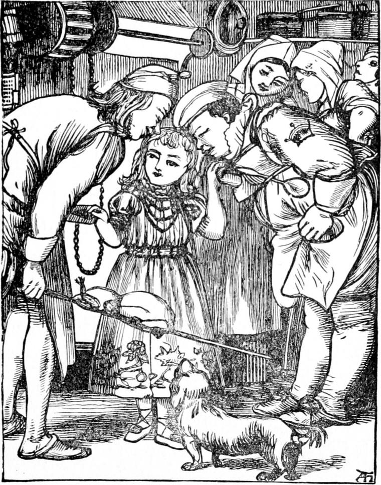

When she woke the next morning, the first thing she heard was the rain still falling. Indeed, this day was so like the last that it would have been difficult to tell where was the use of it. The first thing she thought of, however, was not the rain, but the lady in the tower; and the first question that occupied her thoughts was whether she should not ask the nurse to fulfil her promise this very morning, and go with her to find her grandmother as soon as she had had her breakfast. But she came to the conclusion that perhaps the lady would not be pleased if she took anyone to see her without first asking leave; especially as it was pretty evident, seeing she lived on pigeons' eggs, and cooked them herself, that she did not want the household to know she was there. So the princess resolved to take the first opportunity of running up alone and asking whether she might bring her nurse. She believed the fact that she could not otherwise convince her she was telling the truth would have much weight with her grandmother.
The princess and her nurse were the best of friends all dressing-time, and the princess in consequence ate an enormous little breakfast.
'I wonder, Lootie'—that was her pet name for her nurse—'what pigeons' eggs taste like?' she said, as she was eating her egg—not quite a common one, for they always picked out the pinky ones for her.
'We'll get you a pigeon's egg, and you shall judge for yourself,' said the nurse.
'Oh, no, no!' returned Irene, suddenly reflecting they might disturb the old lady in getting it, and that even if they did not, she would have one less in consequence.
'What a strange creature you are,' said the nurse—'first to want a thing and then to refuse it!'
But she did not say it crossly, and the princess never minded any remarks that were not unfriendly.
'Well, you see, Lootie, there are reasons,' she returned, and said no more, for she did not want to bring up the subject of their former strife, lest her nurse should offer to go before she had had her grandmother's permission to bring her. Of course she could refuse to take her, but then she would believe her less than ever.
Now the nurse, as she said herself afterwards, could not be every moment in the room; and as never before yesterday had the princess given her the smallest reason for anxiety, it had not yet come into her head to watch her more closely. So she soon gave her a chance, and, the very first that offered, Irene was off and up the stairs again.
This day's adventure, however, did not turn out like yesterday's, although it began like it; and indeed to-day is very seldom like yesterday, if people would note the differences—even when it rains. The princess ran through passage after passage, and could not find the stair of the tower. My own suspicion is that she had not gone up high enough, and was searching on the second instead of the third floor. When she turned to go back, she failed equally in her search after the stair. She was lost once more.
Something made it even worse to bear this time, and it was no wonder that she cried again. Suddenly it occurred to her that it was after having cried before that she had found her grandmother's stair. She got up at once, wiped her eyes, and started upon a fresh quest.

This time, although she did not find what she hoped, she found what was next best: she did not come on a stair that went up, but she came upon one that went down. It was evidently not the stair she had come up, yet it was a good deal better than none; so down she went, and was singing merrily before she reached the bottom. There, to her surprise, she found herself in the kitchen. Although she was not allowed to go there alone, her nurse had often taken her, and she was a great favourite with the servants. So there was a general rush at her the moment she appeared, for every one wanted to have her; and the report of where she was soon reached the nurse's ears. She came at once to fetch her; but she never suspected how she had got there, and the princess kept her own counsel.
Her failure to find the old lady not only disappointed her, but made her very thoughtful. Sometimes she came almost to the nurse's opinion that she had dreamed all about her; but that fancy never lasted very long. She wondered much whether she should ever see her again, and thought it very sad not to have been able to find her when she particularly wanted her. She resolved to say nothing more to her nurse on the subject, seeing it was so little in her power to prove her words.